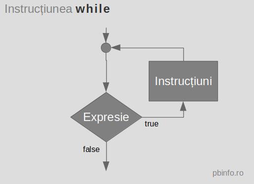

Instructiunea while este o structură repetitivă cu număr necunoscut de pași și test inițial.
while (Expresie)
Instructiune
Expresie, iar rezultatul se convertește la booltrueInstructiunefalse,se trece la instrucțiunea de după while.
Instructiunese execută cât timpExpresieestetrue-condiție adevărată Expresieeste de începutfalse, Instructiunenu se execută deloc.Instructiune poate fi orice fel de instrucțiune, dar una singură.
Dacă sunt necesare mai multe instrucțiuni, se va folosi instrucțiunea compusă.Expresiesă-și modifice valoarea în
Instructiune.Altfel se obține obuclă infinită.Următorul program citește valoarea variabilei n și calculează suma primelor n numere naturale. Rulați-l analizând rezultatul pentru diverse valori ale lui n, inclusiv 0.
using namespace std; int main () { int n; cin >> n; int S = 0; int i = 1; while(i <= n) { S += i; i ++; } cout << S << endl; return 0; }